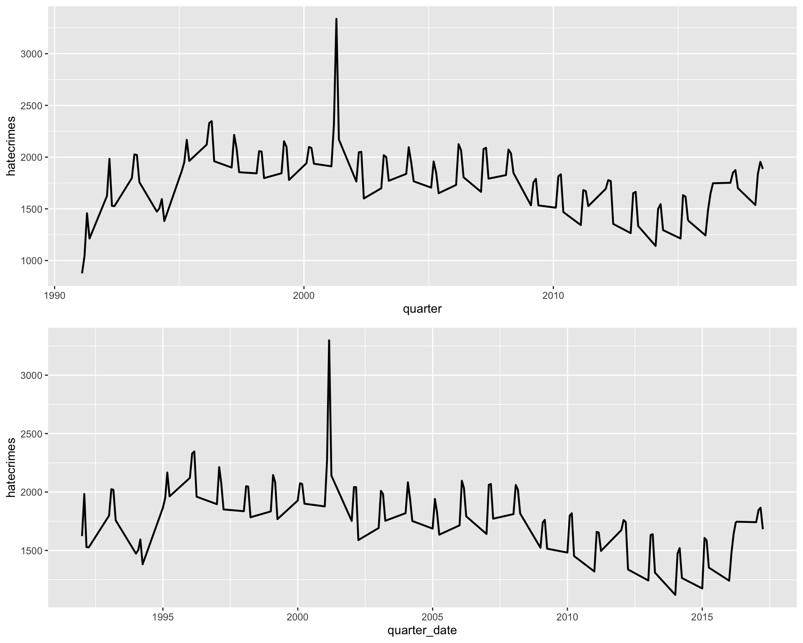
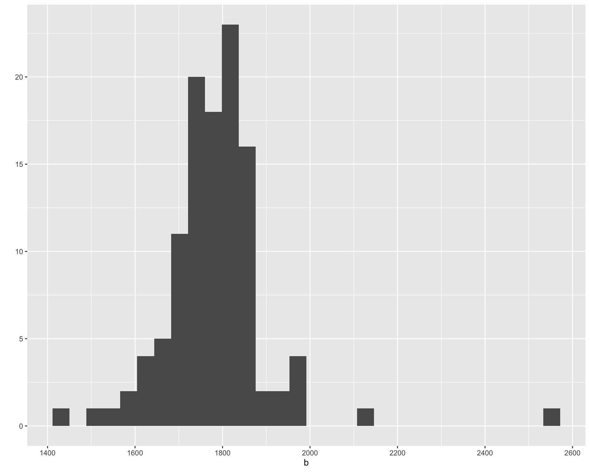

Detrending National Hate Crime Figures in the US, 1992-2017
Sefa Ozalp
2019-11-15
Last updated: 2019-12-12
Checks: 7 0
Knit directory: fbi_hate_crimes_data_viz/
This reproducible R Markdown analysis was created with workflowr (version 1.4.0). The Checks tab describes the reproducibility checks that were applied when the results were created. The Past versions tab lists the development history.
Great! Since the R Markdown file has been committed to the Git repository, you know the exact version of the code that produced these results.
Great job! The global environment was empty. Objects defined in the global environment can affect the analysis in your R Markdown file in unknown ways. For reproduciblity it’s best to always run the code in an empty environment.
The command set.seed(20191114) was run prior to running the code in the R Markdown file. Setting a seed ensures that any results that rely on randomness, e.g. subsampling or permutations, are reproducible.
Great job! Recording the operating system, R version, and package versions is critical for reproducibility.
Nice! There were no cached chunks for this analysis, so you can be confident that you successfully produced the results during this run.
Great job! Using relative paths to the files within your workflowr project makes it easier to run your code on other machines.
Great! You are using Git for version control. Tracking code development and connecting the code version to the results is critical for reproducibility. The version displayed above was the version of the Git repository at the time these results were generated.
Note that you need to be careful to ensure that all relevant files for the analysis have been committed to Git prior to generating the results (you can use wflow_publish or wflow_git_commit). workflowr only checks the R Markdown file, but you know if there are other scripts or data files that it depends on. Below is the status of the Git repository when the results were generated:
Ignored files:
Ignored: .DS_Store
Ignored: .Rhistory
Ignored: .Rproj.user/
Ignored: data/.DS_Store
Ignored: data/data_2017/.DS_Store
Ignored: data/data_2017/raw/.DS_Store
Ignored: data/data_2017/raw/Hate Crime Statistics 2017 Tables/.DS_Store
Ignored: data/data_2018/
Ignored: data/edwards_data/.DS_Store
Ignored: data/open_ICPSR/.DS_Store
Ignored: data/ucrpd/.DS_Store
Ignored: data/ucrpd/data_1992/.DS_Store
Ignored: data/ucrpd/data_1992/ds1_batch_header/.DS_Store
Ignored: data/ucrpd/data_1992/ds2_incident_record/.DS_Store
Ignored: data/ucrpd/data_1993/.DS_Store
Ignored: data/ucrpd/data_1993/ICPSR_24240/.DS_Store
Ignored: data/ucrpd/data_1994/
Ignored: data/ucrpd/data_1995/
Ignored: data/ucrpd/data_1996/
Ignored: data/ucrpd/data_1997/
Ignored: data/ucrpd/data_1998/
Ignored: data/ucrpd/data_1999/
Ignored: data/ucrpd/data_2000/
Ignored: data/ucrpd/data_2001/
Ignored: data/ucrpd/data_2002/
Ignored: data/ucrpd/data_2003/
Ignored: data/ucrpd/data_2004/
Ignored: data/ucrpd/data_2005/
Ignored: data/ucrpd/data_2006/
Ignored: data/ucrpd/data_2007/
Ignored: data/ucrpd/data_2008/
Ignored: data/ucrpd/data_2009/
Ignored: data/ucrpd/data_2010/
Ignored: data/ucrpd/data_2011/
Ignored: data/ucrpd/data_2012/
Ignored: data/ucrpd/data_2013/
Ignored: data/ucrpd/data_2014/
Ignored: data/ucrpd/data_2015/
Ignored: data/ucrpd/data_2016/
Ignored: data/ucrpd/data_2017/
Ignored: data/ucrpd/data_2018/
Ignored: data/ucrpd/data_2019/
Ignored: docs/.DS_Store
Note that any generated files, e.g. HTML, png, CSS, etc., are not included in this status report because it is ok for generated content to have uncommitted changes.
These are the previous versions of the R Markdown and HTML files. If you’ve configured a remote Git repository (see ?wflow_git_remote), click on the hyperlinks in the table below to view them.
| File | Version | Author | Date | Message |
|---|---|---|---|---|
| rmd | 38e517f | Sefa Ozalp | 2019-12-12 | wflow_publish(c(“analysis/fbi_hate_crimes_1992.rmd”, |
| html | c9ae999 | Sefa Ozalp | 2019-12-12 | Build site. |
| rmd | 5fdefcd | Sefa Ozalp | 2019-12-12 | wflow_publish(c(“analysis/fbi_hate_crimes_1992.rmd”, |
| html | 7020e81 | Sefa Ozalp | 2019-11-19 | Build site. |
| rmd | ba72196 | Sefa Ozalp | 2019-11-19 | polish yearly plot |
| html | 6a41988 | Sefa Ozalp | 2019-11-19 | Build site. |
| html | 559c7f0 | Sefa Ozalp | 2019-11-19 | Build site. |
| rmd | 4db356f | Sefa Ozalp | 2019-11-19 | add title references |
| html | f002d4f | Sefa Ozalp | 2019-11-19 | Build site. |
| rmd | 7e57593 | Sefa Ozalp | 2019-11-19 | correct type in the titles |
| html | 68b4e47 | Sefa Ozalp | 2019-11-19 | Build site. |
| rmd | bdd6b5e | Sefa Ozalp | 2019-11-19 | update titles |
| html | aaf80dd | Sefa Ozalp | 2019-11-19 | Build site. |
| html | ae0c3e2 | Sefa Ozalp | 2019-11-19 | Build site. |
| rmd | d2b4f78 | Sefa Ozalp | 2019-11-19 | large commit with data using the data from Edwards |
| html | d2b4f78 | Sefa Ozalp | 2019-11-19 | large commit with data using the data from Edwards |
| html | 9277573 | Sefa Ozalp | 2019-11-15 | Build site. |
| rmd | cff9d6e | Sefa Ozalp | 2019-11-15 | analysis/index.Rmd |
| html | e368ec1 | Sefa Ozalp | 2019-11-15 | Build site. |
| rmd | 5e93796 | Sefa Ozalp | 2019-11-15 | update index |
| html | 5e93796 | Sefa Ozalp | 2019-11-15 | update index |
| rmd | 7627c7c | Sefa Ozalp | 2019-11-15 | wip FBI data plots |
| html | 7627c7c | Sefa Ozalp | 2019-11-15 | wip FBI data plots |
Introduction
This document will recreate the Figure 2 from the ‘The Effect of President Trump’s Election on Hate Crimes’ paper (Rushin and Edwards 2018). A screenshot of the plot is provided below 
In this line chart, the authors illustrate a detrended time series of the number of quarterly aggregated hate crimes in the US, as recorded in the FBI dataset between 1992 and 2017. Even after detrending the dataset, we observe a very large spike after 9/11. The second largest spike is after Trump’s election. Citing (Hamilton 2018), the authors argue against using Hodrick-Prescott filter to detrend the seasonality in the data and use linear regression to subtract the quarterly and yearly effects. The authors do not provide data not the code in the paper but they might make both available on request.
Sub-tasks
The sub-tasks to recreate the graph are as follows:
- Find the data of hate crimes between 1992 and 2017 on FBI website.
- Import and process the data.
- Detrend the data using the same methodology as (Rushin and Edwards 2018).
- Reproduce the graph.
Reproducing the Figure Using the Data from the Paper
library(tidyverse)
library(lubridate)
library(scales)edwards <- haven::read_dta(here::here("/data/edwards_data/sefaozalp.dta")) %>%
filter(!year %in% c(1985:1991) ) %>%
filter(!is.na(hatecrimes)) %>%
mutate(year_fct=as.factor(year), quarter_fct=as.factor(quarter))
linear_model <- lm(hatecrimes~year_fct+quarter_fct, data = edwards)Regression results
summary(linear_model)
Call:
lm(formula = hatecrimes ~ year_fct + quarter_fct, data = edwards)
Residuals:
Min 1Q Median 3Q Max
-0.809 -0.631 -0.559 -0.474 301.191
Coefficients:
Estimate Std. Error t value Pr(>|t|)
(Intercept) 0.484576 0.037291 12.995 < 2e-16 ***
year_fct1993 0.074678 0.049936 1.495 0.134789
year_fct1994 -0.056334 0.049935 -1.128 0.259262
year_fct1995 0.102244 0.049935 2.048 0.040606 *
year_fct1996 0.166683 0.049932 3.338 0.000843 ***
year_fct1997 0.109271 0.049934 2.188 0.028648 *
year_fct1998 0.083748 0.049931 1.677 0.093490 .
year_fct1999 0.092995 0.049933 1.862 0.062548 .
year_fct2000 0.104078 0.049932 2.084 0.037125 *
year_fct2001 0.232612 0.049933 4.658 3.19e-06 ***
year_fct2002 0.060869 0.049935 1.219 0.222859
year_fct2003 0.061860 0.049934 1.239 0.215409
year_fct2004 0.074423 0.049934 1.490 0.136112
year_fct2005 0.034325 0.049934 0.687 0.491827
year_fct2006 0.077647 0.049933 1.555 0.119940
year_fct2007 0.070178 0.049935 1.405 0.159905
year_fct2008 0.083307 0.049935 1.668 0.095256 .
year_fct2009 -0.009620 0.049935 -0.193 0.847228
year_fct2010 -0.008831 0.049935 -0.177 0.859620
year_fct2011 -0.042409 0.049935 -0.849 0.395726
year_fct2012 -0.011658 0.049936 -0.233 0.815400
year_fct2013 -0.066591 0.049935 -1.334 0.182352
year_fct2014 -0.101956 0.049934 -2.042 0.041170 *
year_fct2015 -0.074865 0.049933 -1.499 0.133792
year_fct2016 -0.044155 0.049931 -0.884 0.376521
year_fct2017 0.037715 0.049935 0.755 0.450082
quarter_fct2 0.085000 0.019585 4.340 1.43e-05 ***
quarter_fct3 0.091694 0.019586 4.682 2.85e-06 ***
quarter_fct4 0.004990 0.019585 0.255 0.798906
---
Signif. codes: 0 '***' 0.001 '**' 0.01 '*' 0.05 '.' 0.1 ' ' 1
Residual standard error: 3.958 on 326764 degrees of freedom
Multiple R-squared: 0.0004988, Adjusted R-squared: 0.0004132
F-statistic: 5.824 on 28 and 326764 DF, p-value: < 2.2e-16Detrend Data Using Residuals
edwards$predictions= predict(linear_model, edwards)
edwards$residuals= resid(linear_model)
edwards$mean= mean(edwards$hatecrimes)
edwards$hatedetrend=edwards$residuals+edwards$mean
edwards_processed <- edwards %>%
arrange(date) %>%
group_by(date, year, quarter) %>%
summarise(hatedetrend=sum(hatedetrend), predictions=sum(predictions), residuals=sum(residuals), mean=sum(mean)) %>%
ungroup() %>%
mutate(quarter_str=paste(as.character(year), as.character(quarter),sep = "-")) %>%
mutate(quarter_date= yq(quarter_str))
edwards_processed# A tibble: 104 x 9
date year quarter hatedetrend predictions residuals mean quarter_str
<dbl> <dbl> <dbl> <dbl> <dbl> <dbl> <dbl> <chr>
1 128 1992 1 1893. 1523. 100. 1792. 1992-1
2 129 1992 2 1986. 1790. 193. 1792. 1992-2
3 130 1992 3 1511. 1811. -282. 1792. 1992-3
4 131 1992 4 1780. 1538. -12.2 1792. 1992-4
5 132 1993 1 1833. 1757. 41.4 1792. 1993-1
6 133 1993 2 1792. 2024. -0.247 1792. 1993-2
7 134 1993 3 1766. 2045. -26.3 1792. 1993-3
8 135 1993 4 1777. 1773. -14.9 1792. 1993-4
9 136 1994 1 1920. 1346. 127. 1792. 1994-1
10 137 1994 2 1684. 1613. -109. 1792. 1994-2
# … with 94 more rows, and 1 more variable: quarter_date <date>Reproduce the Plot
Finally, we can reproduce the plot.
legend_points <- tibble(quarter_date= dmy(c("01-10-2016", "01-10-2012", "01-10-2008", "01-07-2001")),
labels= c("Trump 2016", "Obama 2012", "Obama 2008", "9/11")) %>%
left_join(edwards_processed) %>%
arrange(quarter_date)Joining, by = "quarter_date"edwards_processed %>%
ggplot(aes(x=quarter_date, y=hatedetrend))+
geom_line(size=0.8)+
scale_y_continuous(labels = comma, limits = c(1400, 2600), breaks = seq(1500,3500,250), minor_breaks = NULL)+
scale_x_date(breaks = seq.Date(dmy("01-01-1992"), dmy("31-12-2017"), by= "2 year"),
date_labels = "%Y-%m",
limits = c(lubridate::dmy("01-01-1992"), lubridate::dmy("31-12-2017")),
expand=c(0,0))+
hrbrthemes::theme_ipsum_rc()+
labs(title = "Detrended Quarterly Hate Crime in the US, 1992-2017",
y="Number of Hate Crime Incidents (Detrended)",
x= "Date (Quarter)",
subtitle = "Source: FBI Hate Crime Statistics",
caption = "Hate Lab, by @SefaOzalp, 2019"
)+
theme(plot.caption = element_text(size = 12))+
theme(axis.text.x = element_text(angle=45, hjust = 1))+
geom_point(data=legend_points, aes(x=quarter_date, y= hatedetrend , shape=factor(labels)), size=3.5,colour="grey45" )+
theme(legend.position="bottom")+
scale_shape_manual(values=c( 15,17, 19,18),
name = NULL)+
NULL
| Version | Author | Date |
|---|---|---|
| c9ae999 | Sefa Ozalp | 2019-12-12 |
Reproduce the Same Plot Using FBI data
load(here::here("/data/open_ICPSR/ucr_hate_crimes_1992_2017_rda/ucr_hate_crimes_1992_2017.rda"))Lets check the raw data aggregated quarterly.
qt_hate <- ucr_hate_crimes_1992_2017 %>%
as.tibble() %>%
filter(!is.na(bias_motivation_offense_1)) %>%
select(contains("year"), contains("date")) %>%
mutate(date= lubridate::ymd(date), quarter= lubridate::quarter(date,with_year = T),
quarter_fct= as.factor(lubridate::quarter(date,with_year = F)), year_fct=as.factor(year)) %>%
count(quarter, quarter_fct, year, year_fct) %>%
filter(!is.na(quarter)) %>%
rename(hatecrimes=n)Warning: `as.tibble()` is deprecated, use `as_tibble()` (but mind the new semantics).
This warning is displayed once per session.qt_hate %>%
ggplot(aes(x=quarter, y=hatecrimes))+
geom_line(size=0.8)+
scale_x_continuous(breaks = seq(1992,2017,2), expand=c(0.01,0))+
hrbrthemes::theme_ipsum_rc()+
scale_y_continuous(label=comma, breaks = seq(0,3500, 500), limits = c(0,3500), minor_breaks = NULL)+
labs(title = "Quarterly Aggregated Hate Crime Incidents in the US, 1992-2019",
y="Number of Hate Crime Incidents",
subtitle = "Source: FBI Hate Crime Statistics",
caption = "Hate Lab, by @SefaOzalp, 2019"
)+
theme(plot.caption = element_text(size = 12))+
theme(axis.text.x = element_text(angle=45, hjust = 1))
| Version | Author | Date |
|---|---|---|
| 7020e81 | Sefa Ozalp | 2019-11-19 |
Compare Raw Numbers
qt_ucr_plot <- qt_hate %>%
ggplot(aes(x=quarter, y=hatecrimes))+
geom_line(size=0.8)
qt_edwards_plot <- edwards %>%
group_by(quarter, year) %>%
summarise(hatecrimes=sum(hatecrimes)) %>%
mutate(quarter_date=dmy(paste( "01", as.character(quarter), as.character(year),sep = "-" ))) %>%
ggplot(aes(x=quarter_date, y=hatecrimes))+
geom_line(size=0.8)
gridExtra::grid.arrange(qt_ucr_plot,qt_edwards_plot, nrow=2 )
| Version | Author | Date |
|---|---|---|
| 7020e81 | Sefa Ozalp | 2019-11-19 |
Linear Model with UCR Data
lm_ucr_hc <- lm(hatecrimes~ year_fct + quarter_fct, data = qt_hate)Regression results
summary(linear_model)
Call:
lm(formula = hatecrimes ~ year_fct + quarter_fct, data = edwards)
Residuals:
Min 1Q Median 3Q Max
-0.809 -0.631 -0.559 -0.474 301.191
Coefficients:
Estimate Std. Error t value Pr(>|t|)
(Intercept) 0.484576 0.037291 12.995 < 2e-16 ***
year_fct1993 0.074678 0.049936 1.495 0.134789
year_fct1994 -0.056334 0.049935 -1.128 0.259262
year_fct1995 0.102244 0.049935 2.048 0.040606 *
year_fct1996 0.166683 0.049932 3.338 0.000843 ***
year_fct1997 0.109271 0.049934 2.188 0.028648 *
year_fct1998 0.083748 0.049931 1.677 0.093490 .
year_fct1999 0.092995 0.049933 1.862 0.062548 .
year_fct2000 0.104078 0.049932 2.084 0.037125 *
year_fct2001 0.232612 0.049933 4.658 3.19e-06 ***
year_fct2002 0.060869 0.049935 1.219 0.222859
year_fct2003 0.061860 0.049934 1.239 0.215409
year_fct2004 0.074423 0.049934 1.490 0.136112
year_fct2005 0.034325 0.049934 0.687 0.491827
year_fct2006 0.077647 0.049933 1.555 0.119940
year_fct2007 0.070178 0.049935 1.405 0.159905
year_fct2008 0.083307 0.049935 1.668 0.095256 .
year_fct2009 -0.009620 0.049935 -0.193 0.847228
year_fct2010 -0.008831 0.049935 -0.177 0.859620
year_fct2011 -0.042409 0.049935 -0.849 0.395726
year_fct2012 -0.011658 0.049936 -0.233 0.815400
year_fct2013 -0.066591 0.049935 -1.334 0.182352
year_fct2014 -0.101956 0.049934 -2.042 0.041170 *
year_fct2015 -0.074865 0.049933 -1.499 0.133792
year_fct2016 -0.044155 0.049931 -0.884 0.376521
year_fct2017 0.037715 0.049935 0.755 0.450082
quarter_fct2 0.085000 0.019585 4.340 1.43e-05 ***
quarter_fct3 0.091694 0.019586 4.682 2.85e-06 ***
quarter_fct4 0.004990 0.019585 0.255 0.798906
---
Signif. codes: 0 '***' 0.001 '**' 0.01 '*' 0.05 '.' 0.1 ' ' 1
Residual standard error: 3.958 on 326764 degrees of freedom
Multiple R-squared: 0.0004988, Adjusted R-squared: 0.0004132
F-statistic: 5.824 on 28 and 326764 DF, p-value: < 2.2e-16Detrend Data Using Residuals
qt_hate$predictions= predict(lm_ucr_hc, qt_hate)
qt_hate$residuals= resid(lm_ucr_hc)
qt_hate$mean= mean(qt_hate$hatecrimes)
qt_hate$hatedetrend=qt_hate$residuals+qt_hate$mean
qt_hate %>%
mutate(quarter_date=dmy(paste( "01", as.character(quarter_fct), as.character(year_fct),sep = "-" ))) %>%
ggplot(aes(x=quarter_date, y=hatedetrend))+
geom_line(size=0.8)+
scale_y_continuous(labels = comma, limits = c(1250, 2750), breaks = seq(1500,3500,250), minor_breaks = NULL)+
scale_x_date(breaks = seq.Date(dmy("01-01-1992"), dmy("31-12-2017"), by= "2 year"),
date_labels = "%Y-%m",
limits = c(lubridate::dmy("01-01-1992"), lubridate::dmy("31-12-2017")),
expand=c(0,0))+
hrbrthemes::theme_ipsum_rc()+
labs(title = "Detrended Quarterly Hate Crime in the US, 1992-2017",
y="Number of Hate Crime Incidents (Detrended)",
x= "Date (Quarter)",
subtitle = "Source: FBI Hate Crime Statistics",
caption = "Hate Lab, by @SefaOzalp, 2019"
)+
theme(plot.caption = element_text(size = 12))+
theme(axis.text.x = element_text(angle=45, hjust = 1))+
geom_point(data=legend_points, aes(x=quarter_date, y= hatedetrend , shape=factor(labels)), size=4,colour="grey50" )+
theme(legend.position="bottom")+
scale_shape_manual(values=c( 13,15, 17,18),
name = NULL)+
NULL 
Compare Both Models
a <- edwards_processed$hatedetrend
b <- qt_hate$hatedetrend
a [1] 1892.633 1985.563 1510.530 1779.956 1832.982 1791.923 1765.890
[8] 1777.316 1919.633 1683.563 1752.530 1812.956 1814.383 1631.313
[15] 1827.280 1895.706 1866.835 1808.680 1804.640 1690.238 1822.305
[22] 1872.234 1713.086 1761.627 1842.499 1789.344 1764.304 1774.817
[29] 1811.436 1855.281 1773.340 1729.766 1869.620 1750.447 1723.407
[36] 1826.919 1415.766 1542.696 2548.424 1662.937 1831.383 1853.313
[43] 1832.280 1651.706 1767.294 1818.200 1770.167 1813.592 1854.796
[50] 1851.726 1690.613 1772.118 1848.784 1835.681 1703.681 1781.107
[57] 1740.674 1854.595 1772.563 1801.991 1690.133 1843.063 1830.030
[64] 1805.456 1818.883 1800.813 1740.780 1808.206 1822.956 1772.790
[71] 1773.754 1799.183 1779.382 1828.321 1827.276 1733.704 1722.882
[78] 1794.855 1767.742 1883.204 1980.264 1799.194 1761.161 1627.494
[85] 1721.862 1843.791 1829.698 1773.332 1709.980 1798.910 1821.877
[92] 1838.486 1679.861 1844.866 1802.758 1842.339 1649.499 1621.344
[99] 1761.304 2138.817 1893.133 1729.063 1729.030 1817.456b [1] 1910.481 2002.596 1525.865 1792.865 1849.231 1810.346 1782.615
[8] 1789.615 1936.731 1700.846 1768.115 1826.115 1831.481 1648.596
[15] 1842.865 1908.865 1883.231 1825.346 1820.615 1702.615 1838.981
[22] 1888.096 1730.365 1774.365 1857.231 1804.346 1778.615 1791.615
[29] 1827.231 1869.346 1792.615 1742.615 1877.231 1767.346 1734.615
[36] 1852.615 1430.481 1564.596 2566.865 1669.865 1850.481 1866.596
[43] 1847.865 1666.865 1778.731 1831.846 1790.115 1831.115 1877.731
[50] 1868.846 1699.115 1786.115 1866.231 1852.346 1720.615 1792.615
[57] 1751.481 1878.596 1795.865 1805.865 1709.981 1857.096 1846.365
[64] 1818.365 1832.231 1812.346 1753.615 1833.615 1832.981 1787.096
[71] 1799.365 1812.365 1805.981 1842.096 1839.365 1744.365 1739.481
[78] 1810.596 1778.865 1902.865 1996.731 1813.846 1783.115 1638.115
[85] 1738.481 1857.596 1847.865 1787.865 1723.231 1814.346 1837.615
[92] 1856.615 1702.481 1854.596 1816.865 1857.865 1647.981 1637.096
[99] 1764.365 2182.365 1910.231 1740.346 1742.615 1838.615summary(a) Min. 1st Qu. Median Mean 3rd Qu. Max.
1416 1748 1799 1792 1832 2548 summary(b) Min. 1st Qu. Median Mean 3rd Qu. Max.
1430 1762 1812 1808 1851 2567 qplot(a)`stat_bin()` using `bins = 30`. Pick better value with `binwidth`.
| Version | Author | Date |
|---|---|---|
| 7020e81 | Sefa Ozalp | 2019-11-19 |
qplot(b)`stat_bin()` using `bins = 30`. Pick better value with `binwidth`.
| Version | Author | Date |
|---|---|---|
| 7020e81 | Sefa Ozalp | 2019-11-19 |
t.test(a,b)
Welch Two Sample t-test
data: a and b
t = -0.94654, df = 205.97, p-value = 0.345
alternative hypothesis: true difference in means is not equal to 0
95 percent confidence interval:
-48.22953 16.94107
sample estimates:
mean of x mean of y
1792.308 1807.952 wilcox.test(a,b)
Wilcoxon rank sum test with continuity correction
data: a and b
W = 4693, p-value = 0.09972
alternative hypothesis: true location shift is not equal to 0WIP
Using additive https://anomaly.io/seasonal-trend-decomposition-in-r/index.html https://www.stat.pitt.edu/stoffer/tsa4/tsa4.pdf
# library(fpp)
# library(forecast)
#
# data(ausbeer)
# tail(head(ausbeer))
#
# tail(head(ausbeer, 17*4+2),17*4-4)
# timeserie_beer = tail(head(ausbeer, 17*4+2),17*4-4)
# plot(as.ts(timeserie_beer))
# trend_beer = ma(timeserie_beer, order = 4, centre = T)
# plot(as.ts(timeserie_beer))
# lines(trend_beer)
# plot(as.ts(trend_beer))
# detrend_beer = timeserie_beer - trend_beer
# plot(as.ts(detrend_beer))
# m_beer = t(matrix(data = detrend_beer, nrow = 4))
# seasonal_beer = colMeans(m_beer, na.rm = T)
# plot(as.ts(rep(seasonal_beer,16)))
# random_beer = timeserie_beer - trend_beer - seasonal_beer
# plot(as.ts(random_beer))
# recomposed_beer = trend_beer+seasonal_beer+random_beer
# plot(as.ts(recomposed_beer))
# ts_beer = ts(timeserie_beer, frequency = 4)
# decompose_beer = decompose(ts_beer, "additive")
#
# plot(as.ts(decompose_beer$seasonal))
# plot(as.ts(decompose_beer$trend))
# plot(as.ts(decompose_beer$random))
# plot(decompose_beer)
#
# ts_beer = ts(timeserie_beer, frequency = 4)
# stl_beer = stl(ts_beer, "periodic")
# seasonal_stl_beer <- stl_beer$time.series[,1]
# trend_stl_beer <- stl_beer$time.series[,2]
# random_stl_beer <- stl_beer$time.series[,3]
#
# plot(ts_beer)
# plot(as.ts(seasonal_stl_beer))
# plot(trend_stl_beer)
# plot(random_stl_beer)
# plot(stl_beer)# str(timeserie_beer)
#
# hate_vector <- hate %>% select(n) %>% pull
#
# ts_hate <- ts(hate_vector, , start=c(1992, 1), end=c(2017, 12), frequency=12)
# ts_hateReferences
Hamilton, James D. 2018. “Why You Should Never Use the Hodrick-Prescott Filter.” The Review of Economics and Statistics 100 (5): 831–43. https://doi.org/10.1162/rest_a_00706.
Rushin, Stephen, and Griffin Sims Edwards. 2018. “The Effect of President Trump’s Election on Hate Crimes.” SSRN Electronic Journal. https://doi.org/10.2139/ssrn.3102652.
sessionInfo()R version 3.6.1 (2019-07-05)
Platform: x86_64-apple-darwin15.6.0 (64-bit)
Running under: macOS Mojave 10.14.6
Matrix products: default
BLAS: /Library/Frameworks/R.framework/Versions/3.6/Resources/lib/libRblas.0.dylib
LAPACK: /Library/Frameworks/R.framework/Versions/3.6/Resources/lib/libRlapack.dylib
locale:
[1] en_GB.UTF-8/en_GB.UTF-8/en_GB.UTF-8/C/en_GB.UTF-8/en_GB.UTF-8
attached base packages:
[1] stats graphics grDevices utils datasets methods base
other attached packages:
[1] scales_1.0.0 lubridate_1.7.4 forcats_0.4.0 stringr_1.4.0
[5] dplyr_0.8.3 purrr_0.3.2 readr_1.3.1 tidyr_1.0.0
[9] tibble_2.1.3 ggplot2_3.2.1 tidyverse_1.2.1
loaded via a namespace (and not attached):
[1] hrbrthemes_0.6.0 tidyselect_0.2.5 xfun_0.9
[4] haven_2.1.1 lattice_0.20-38 colorspace_1.4-1
[7] vctrs_0.2.0 generics_0.0.2 htmltools_0.3.6
[10] yaml_2.2.0 utf8_1.1.4 rlang_0.4.0
[13] pillar_1.4.2 glue_1.3.1 withr_2.1.2
[16] gdtools_0.2.0 modelr_0.1.5 readxl_1.3.1
[19] lifecycle_0.1.0 munsell_0.5.0 gtable_0.3.0
[22] workflowr_1.4.0 cellranger_1.1.0 rvest_0.3.4
[25] evaluate_0.14 labeling_0.3 knitr_1.25
[28] extrafont_0.17 fansi_0.4.0 Rttf2pt1_1.3.7
[31] broom_0.5.2 Rcpp_1.0.2 backports_1.1.4
[34] jsonlite_1.6 systemfonts_0.1.1 fs_1.3.1
[37] gridExtra_2.3 hms_0.5.1 digest_0.6.21
[40] stringi_1.4.3 grid_3.6.1 rprojroot_1.3-2
[43] here_0.1 cli_1.1.0 tools_3.6.1
[46] magrittr_1.5 lazyeval_0.2.2 extrafontdb_1.0
[49] crayon_1.3.4 whisker_0.4 pkgconfig_2.0.3
[52] zeallot_0.1.0 xml2_1.2.2 assertthat_0.2.1
[55] rmarkdown_1.15 httr_1.4.1 rstudioapi_0.10
[58] R6_2.4.0 nlme_3.1-141 git2r_0.26.1
[61] compiler_3.6.1